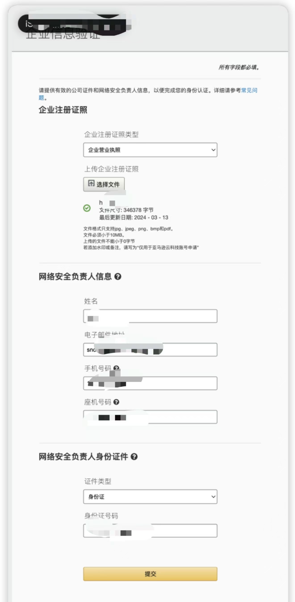
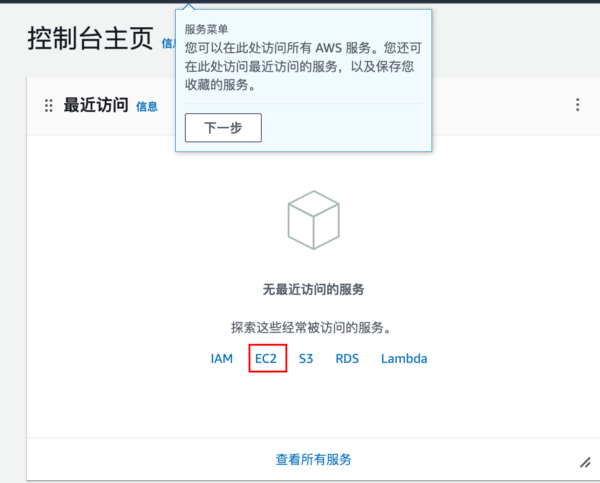

1. 白嫖一年亚马逊 aws-ec2 服务器

致读者: 点击上方 “雪之梦技术驿站” → 点击右上角“ ... ”→ 点选“设为星标★ ” 加上星标，就不会找不到我啦！
保姆级教程带你一步一步注册亚马逊云账号,申请免费中国区域套餐,最终领取你的专属服务器!
亲自体验下来,整个流程非常丝滑顺畅,而且中间无需人工审核环节等待,强烈推荐申请 12 个月的免费服务器.
文章结尾处附有免费套餐申请链接,手把手教学包申请通过的哦!
1.1. 前言
这样白嫖 12 个月免费亚马逊服务器Amazon EC2不香吗?

如果你想问什么是Amazon EC2服务器?那我只好祭出官方文档 什么是 Amazon EC2？
其实简单的这样说,白嫖的服务器基本配置如下,搭建简单服务足够了,反正我是冲了!

如果你不想要服务器,也有很多其他免费套餐可供选择,像是什么数据库存储计算之类的,也有免费试用套餐!
1.2. 前提
申请亚马逊云科技中国区域免费套餐,需要提供以下资料:
- 手机和邮箱
- 企业营业执照
- 负责人的有效身份证件
1.3. 注册
看完免费套餐详情信息,能让我心动的还得是 12 个月的免费服务器.
所以我选择注册中国区域,也有海外区域,不过暂时用不到海外服务器,所以就没有继续研究.
前提准备: 您需要提供企业注册证照和网络安全负责人的有效身份证件进行账户注册
注册邮箱
准备能正常接收验证码的邮箱,如果不想被骚扰也可以用临时邮箱,不过建议最好还是用个人邮箱吧!
设置用户名密码
建议保存好用户名和密码,注册成功后登录时需要用到(还有注册成功后的 id),也可以使用浏览器的记住密码功能.
联系人信息
联系人的姓名和身份证号码以及公司全称和地址.
企业信息验证
上传企业的营业执照和联系人的手机号码以及身份证等资料准备验证.

身份验证
输入手机验证码完成验证
已成功验证您的身份
选择支持计划
选择基本计划,免费服务,将白嫖进行到底!
注册成功
整个注册流程还是很顺利的,提供企业负责人信息以及企业营业执照即可自助注册完成,中间无需审核等待.
亚马逊云科技微信小程序
注册成功后邮箱收到了一封欢迎邮件,实测下来小程序似乎没有绑定注册账号,更像是营销小程序,无管理服务器等基本功能,可忽略.
1.4. 白嫖
还记得刚开始的开始免费试用 Amazon EC2 服务器吗?
免费套餐： 第一年包括每月 Free Tier AMI 上的 750 小时 t2.micro（或者，在未推出 t2.micro 的区域中是 t3.micro）实例用量、每月 750 小时的公有 IPv4 地址用量、30GiB EBS 存储、200 万个输入和输出、1GB 快照，以及 1GB 互联网带宽。
登录控制台
既然已经注册成功,那么接下来让我们开始正式白嫖服务器之旅,Amazon EC2服务器我来了!

现在登录控制台,跟着我的教程继续申请一台自己的专属服务器吧!
启动实例
点击启动实例,开始创建服务器,设置服务器的操作系统以及存储等个性化配置.
名称和标签
自定义服务器的描述名称,例如: aws
应用程序和操作系统映像（亚马逊机器映像）
选择服务器的操作系统,这里根据自己的实际情况操作,也有window服务器!
实例类型
默认,符合条件的免费套餐.

密钥对（登录）
创建密钥对,建议重新生成,等下会下载私钥到本地,这是唯一一次保存的机会!
网络设置
建议重新创建安全组,因为我选择是ubuntu操作系统,等下登录要开放22端口,这个后续也可以再手动修改安全组规则,问题不大.
存储（卷）
默认8GB,如果只申请一台服务器,建议直接拉满到30GB的存储配置.
有资格使用免费套餐的客户最多可获得 30GB 的通用型 (SSD) 或磁存储空间
高级详细信息
随便点开看一眼就算了,能看懂就修改,看不懂就不用动.
启动实例
左侧的配置选好之后,右侧面板摘要信息,可以选择启动实例,等待创建服务器...
创建实例中
不到一分钟的时间就很快创建成功,差一点都来不及截图了呢!
已成功创建
至此已经大功告成,恭喜你成功获取一年的白嫖服务器!
创建账单和免费套餐使用量提醒
根据提示创建提醒,省的一年后忘记了什么时候到期以及超额的事情,这里用到的邮箱就需要是正常使用的邮箱而不能是临时邮箱了哦!
连接到您的实例
根据服务器的操作系统不同,登录方式也不一样,以我申请的ubuntu服务器为例,演示一下登录过程.
登录成功
默认情况下,选择第一个选项Ec2 instance Connect实例连接就能在浏览器控制台登录到服务器.
如果连接失败,检查一下申请服务器一定要选择创建新的密钥对,否则删除该实例重新申请即可!
Welcome to Ubuntu 24.04 LTS (GNU/Linux 6.8.0-1010-aws x86_64)
正在运行
成功进入到服务器,剩下的事情交给你的专业能力,例如开放root账号在本地 ssh 客户端秘钥登录并设置基本信息等等.
1.5. 连接
如果您是跟着我的教程一步步申请的Ubuntu服务器,那么还能接着看到最后,这里提供了关于登录服务器的官方文档.
创建密钥对时系统会自动为您创建私钥并下载到本地,在本地电脑找到你的私钥文件位置,按照如下设置,可实现本地 ssh 客户端登录服务器.
# 设置私钥权限
chmod 400 ~/.ssh/aws.pem
# 根据私钥登录服务器
ssh -i ~/.ssh/aws.pem ubuntu@ec2-******.cn-north-1.compute.amazonaws.com.cn
当然,这也是默认提供的 ssh 客户端登录方式,肯定好用!
假设你已经成功登录到服务器,接下来可以个性化设置将其他公钥上传到服务器实现快捷登录.
ssh -i ~/.ssh/aws.pem ubuntu@ec2-******.cn-north-1.compute.amazonaws.com.cn
改动成这样:
ssh aws
核心思路: 将本地客户端默认生成的公钥(注意不是刚刚生成的 aws.pem 私钥文件)到上传到服务器~/.ssh/authorized_keys文件.
不懂的话可以参考我之前的文章: 云服务器上手指南之从登录服务器开始
1.6. 总结
本文主要介绍了如何白嫖一年的亚马逊云服务器,当然中国区免费套餐不仅仅包括服务器还是有数据库等其他产品.
综合考虑下来还是Amazon EC2云服务器最能吸引我,只需要提供企业营业执照和联系人信息即可全程实现自助申请,整个过程体验下来非常丝滑顺畅,哪怕是新手小白也能顺利领取!
最后强调一下,启动实例的时候一定要创建ssh密钥对并保存到电脑,否则可能会遇到登录问题.
亚马逊
Amazon EC2云服务器申请链接: https://www.amazonaws.cn/free/

1.7. 往期精彩文章
- 这么小而美的取关功能为什么无法实现呢?为了它,我决定入坑开发微信公众号!
- 【硬核防白嫖秘籍】一键取关？直接拉黑，让你的公众号再无回头白嫖党！
- 重装系统之必装神器！错过它们？你的电脑将失去灵魂！
- 谁家爬虫这么明目张胆?连UserAgent都不要了!
- 恋爱年龄差背后的秘密
- 每天一道美味佳肴《糖醋排骨》

1.8. 欢迎扫码关注

欢迎扫码关注,私信回复『加群』一起交流技术
作者: 雪之梦技术驿站
来源: 雪之梦技术驿站
本文原创发布于「雪之梦技术驿站」,转载请注明出处,谢谢合作!